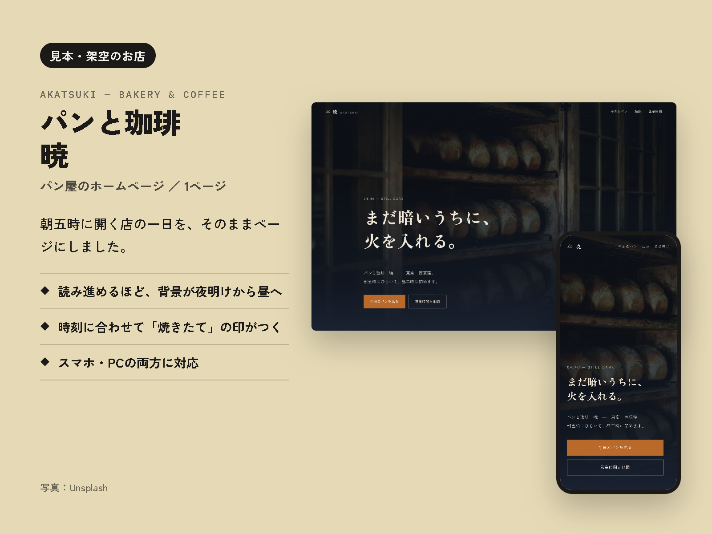
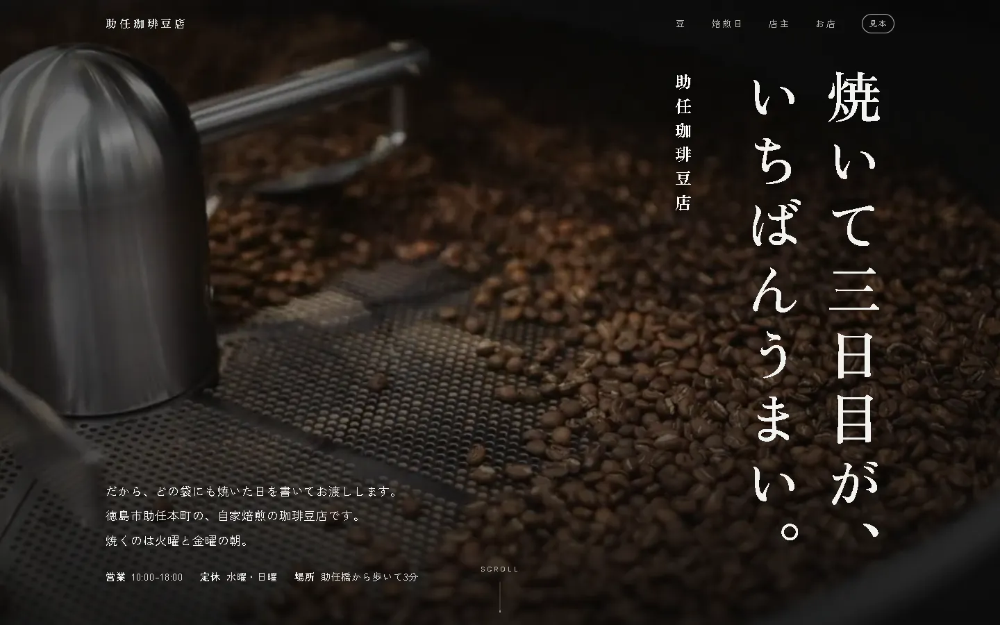
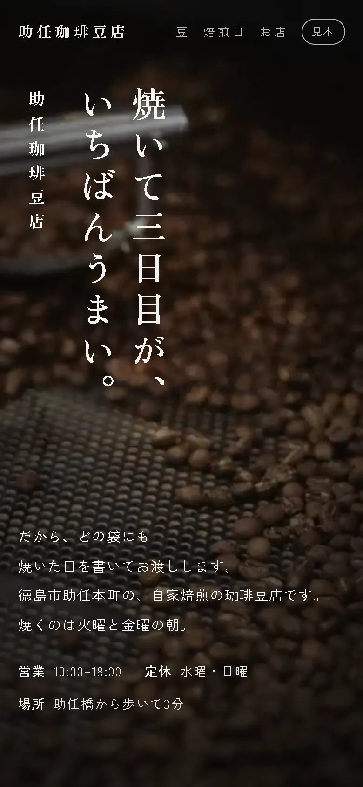
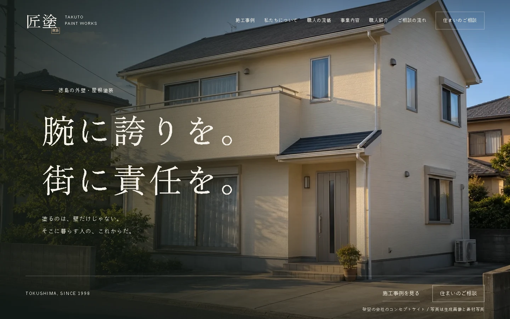
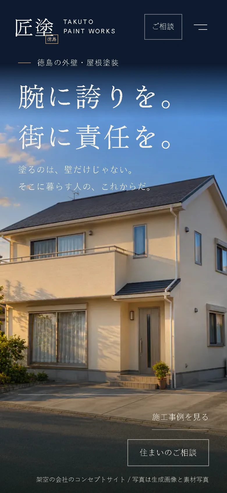
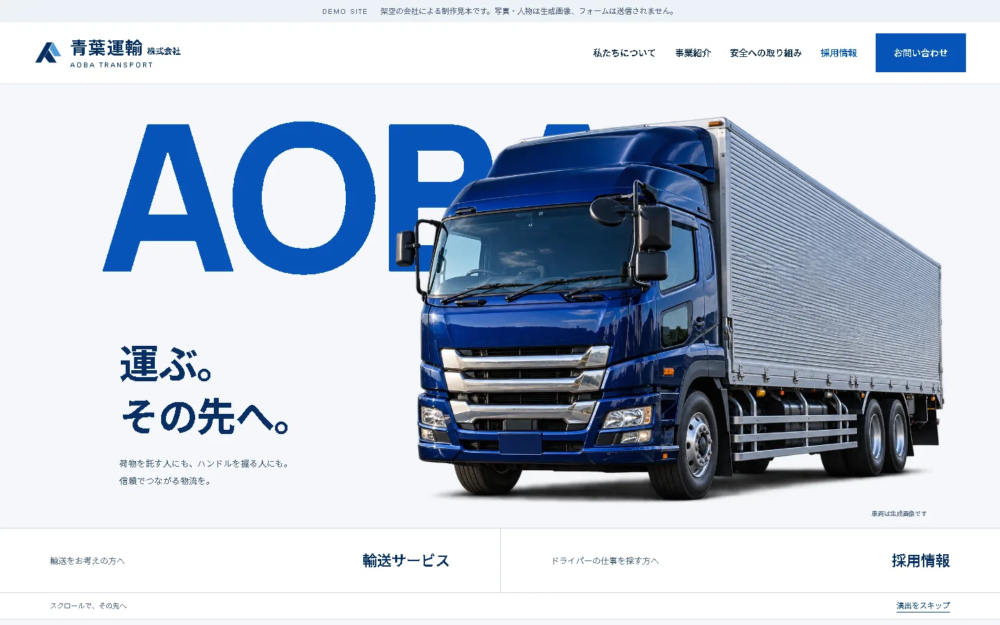
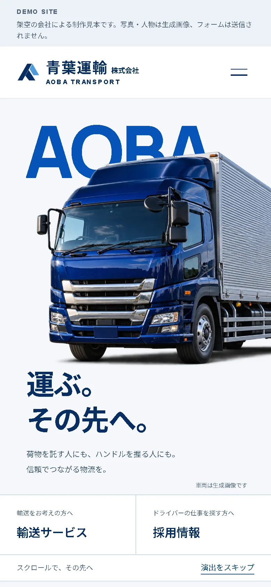

暁｜PCとスマホの紹介画像
PNG・0.46MB
応募先に合う画像を保存して、応募画面で添付してください。すべて自主制作の見本です。
「PNGを保存」で端末に保存します。画像が開いた場合は、画像を長押しして保存してください。応募画面では「写真」または「ファイル」から選べます。
1枚あたり1MB未満です。添付できる枚数や容量は、各応募画面で確認してください。
7枚まとめてZIPを保存スマホでは、下の画像を1枚ずつ保存する方法が手軽です。
落ち着いた店舗サイトの見本

PNG・0.46MB

PNG・0.79MB

PNG・0.67MB
PCとスマホ幅の見た目を伝える見本

PNG・0.95MB

PNG・0.77MB
案内の構成とスマホ表示を伝える見本

PNG・0.75MB

PNG・0.72MB
この案件に画像は添付しません。サイトの見た目の画像では、フォームの修正経験を示せないためです。
2026年11月16日作成。スマホ幅の画像はPCで表示幅を変えて撮影したものです。